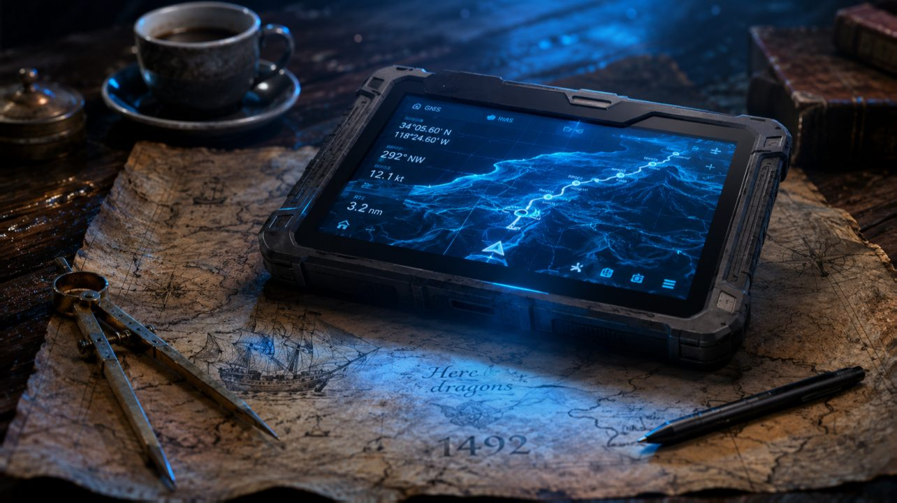

← Цикл «Финансовая архитектура» · 6 из 7
Финмодель, которой можно доверять: Краш-тест для ваших

В 1492 году Христофор Колумб принёс испанской короне свой бизнес-план. Опираясь на лучшие карты того времени, он рассчитал: до Азии — 3 700 километров. Провизию загрузили с небольшим запасом ровно под этот короткий маршрут.
Его «финансовая модель» сошлась идеально: красивая, уверенная, обещающая гигантскую рентабельность. Но составляя план похода, Колумб допустил фатальную расчётную ошибку — перепутал арабские мили с римскими. В результате на бумаге его маршрут «усох» до одной пятой от реального расстояния, которое составляло почти 20 000 километров.
Колумб выжил лишь благодаря слепой удаче — на его пути случайно подвернулась Америка. Не будь этого «чёрного лебедя», экспедиция гарантированно погибла бы от голода посреди океана.
Финансовая модель бизнеса — это та же карта. Вопрос не в том, точна ли она — она всегда будет врать. Вопрос в том, рассчитываете ли вы на случайную «Америку», когда закончатся деньги, или ваша модель умеет перестраиваться, когда берег оказывается не там, где обещала бумага.
Потому что удар всегда приходит именно оттуда.
Акт I. Скорость света не обсуждается
Бизнес живёт не в таблицах. Он живёт в физическом мире — со своими скоростями, ограничениями и константами, которые не голосуют на совете директоров.
Британский полярник Роберт Скотт погиб во льдах Антарктиды из-за классической ошибки моделирования. Он безукоризненно рассчитал рацион — 4000 калорий в сутки. Математика на бумаге сошлась идеально. Но он не учёл реальную физику: сопротивление снега: ручная тяга тяжёлых саней требовала больше - 7000 калорий. Полярники съедали свою норму до грамма, но их тела пожирали сами себя. Модель была математически точной, но физически мёртвой.
То же самое происходит в бизнесе. Один менеджер качественно ведёт двадцать клиентов. Не восемьдесят. Даже не сорок. Одна производственная линия выдаёт столько единиц, сколько позволяет время остывания пластика. Склад одновременно принимает ровно столько машин, сколько есть ворот и доступных погрузчиков.
Это не пессимизм. Это скорость света. Её не обсуждают — в неё упираются и принимают.
Напишите в ячейке Excel, что один менеджер ведёт сто клиентов — и программа покорно согласится. Умножит. Нарисует график выручки, уходящий в правый верхний угол. Бумага стерпит всё. Физика промолчит. До поры.
Финансовая модель без нефинансовых параметров — это карта без масштаба. Она описывает деньги, но игнорирует физику, которая эти деньги производит.
Однажды, я делал модель для компании, которая продаёт международную недвижимость. Они просили сделать сложную, многопараметрическую модель: добавлять сценарии, вводить переменные, делать формулы изощрённее. Я усложнял. Excel уже пересчитывал изменения в ячейке уже больше минуты. Но, на отдельном листе я сделал простое описание: сегментировал каналы продаж — где реально закрываются сделки, их длительность, доходность, капиталоёмкость и сколько времени это занимает у живого менеджера.
Главный вывод они сделали не из сложной модели. А из анализа сегментов, который показал: есть один канал, дающий девяносто процентов результата при двадцати процентах усилий. Ограничение нашлось не в формулах — оно нашлось в календаре одного менеджера. Остальное было иллюзией диверсификации, упакованной в красивые формулы.
Сложная модель отвечала на вопрос «как сойдутся финансы». Простая ответила на вопрос «куда идти». Второй вопрос был важнее.
Хорошая финансовая модель начинается не с EBITDA. Она начинается с вопроса: какое ограничение системы нельзя устранить дополнительной строчкой в бюджете?
Пока вы не нашли это ограничение, вы моделируете не бизнес. Вы моделируете фантазию. Иначе вы разделите судьбу капитана Скотта: математически всё будет безупречно, но физически — замёрзнете во льдах.
Акт II. Два диагноза под одним названием
«Модель не сходится». Эту фразу я слышал десятки раз. Обычно так говорят, когда P&L отрицательный. Но почти всегда за этой жалобой скрываются две абсолютно разные болезни, которые CEO путают между собой.
Диагноз первый. Ошибка физики. Вы достигли всех целевых параметров. Конверсия, средний чек, воронка — всё как в модели. Но P&L отрицательный, а кассовый разрыв не закрывается.
Стоп. Это не проблема исполнения. Это проблема модели. Физика вашего бизнеса просто не позволяет зарабатывать при этих параметрах в этой конфигурации. Карта описывала несуществующий маршрут. Колумба спасло чудо, но ваш маршрут ведёт в океан без спасительных островов. Нужно либо жёстко менять архитектуру — цены, косты, монетизацию — либо честно признать, что проект нежизнеспособен. Лучше это услышать от CFO, чем от кредиторов или судебного пристава.
Это первый сценарий — когда вас убивает сама архитектура. Но бывает и прямо противоположная картина, когда модель безупречна, а подводит двигатель.
Диагноз второй. Ошибка двигателя. KPI не достигнуты. Продажи ниже плана, конверсия хуже прогноза, команда не укомплектована. Текущие параметры предсказывают именно тот плохой результат, который вы видите в отчёте. Не тот, который хотели — тот, который есть.
Модель работает идеально. Просто вы не дожали бизнес.
Здесь карту менять не надо. Здесь надо честно ответить на один вопрос: вы дотянетесь — на этом капитале, с этой командой, в этой жизни? Если да — терпеть и ускоряться. Если нет — менять направление и перестраивать модель под вашу реальную скорость. Или продавать перспективный бизнес, пока не иссяк ваш запал.
Путаница между этими двумя диагнозами убивает. Хорошие идеи хоронят, решив, что «модель сломана». А плохие проекты защищают, потому что страшно признать: физика не сошлась.
Финансовая модель — это не инструмент оптимизма. Это диагностический прибор. Она должна отвечать не на вопрос «сколько мы заработаем», а на вопрос «что именно сейчас сломалось — физика системы или исполнение».
Акт III. Гречка в золотой упаковке
Я видел компании, которые считали успешный бизнес на салфетке. Видел тех, кто нанимал студента-первокурсника, вчера открывшего для себя Excel. И видел тех, кто заказывал финансовую модель у крупного международного консалтинга за сумму с шестью нулями.
Вот как это выглядит изнутри. Появляются три дорогих консультанта в безупречных костюмах. Они приносят авторитетный бренд, проводят десятки важных интервью, строят сотни вкладок, моделируют сложные сценарии. Делают красивую презентацию. А в бэк-офисе привлекают практически того же самого студента-первокурсника, чтобы он собрал им формулы и макросы в Excel.
На выходе вы получаете ту самую гречку. Но в очень дорогой, золотой упаковке.
Проблема даже не в цене. Она в другом: такую сложную модель вы физически не сможете использовать. Вы до неё не доросли, а что ещё хуже — вы её просто не понимаете.
И вот здесь рождается настоящая корпоративная религия.
Поскольку никто не понимает внутреннюю логику громоздкого файла, менеджеры начинают благоговейно, шёпотом цитировать его показатели: «Модель предсказывает…». А реальность в этот момент уже ушла далеко вперёд. Входные параметры изменились, рынок перестроился — а вы продолжаете молиться на священный файл стоимостью в миллион.
Акт IV. Смерть в момент презентации
После финального слайда в переговорной наступает тишина. Все смотрят на красивый файл. Но настоящий вопрос звучит иначе: откроет ли кто-нибудь эту модель через три месяца?
Финансовая модель умирает в момент презентации — если после неё никто не открывает её снова.
Точная, сложная модель хрупка. Она ломается при первом отклонении рынка. Гибкая модель выживает — потому что CEO может перестроить её за десять минут без привлечения консультантов.
Я строил модель для розничной сети, которая росла от стартапа до федерального игрока. Её основа оставалась спартански простой на протяжении всего пути: выручка на точку, затраты на точку, количество точек, стоимость открытия, коэффициент удачных магазинов — и ещё шесть-семь параметров. Физика одного магазина. Каждый квартал реальность вносила поправки — модель менялась вместе с ней.
Из этой простоты и гибкости выросла точность. Модель предсказывала выручку с отклонением в три процента на протяжении нескольких лет. На прибыль компания вышла с точностью предсказания в два месяца.
Не потому, что была идеальной с первого дня. А потому, что была живой.
Сложную модель проверяют простой — как крепость проверяют не чертежами архитектора, а реальной осадой.
Финал
Христофора Колумба спасла Америка. Роберта Скотта не спас никто. Разница между ними была не в качестве расчётов. Один столкнулся с удачей. Другой — с физикой. Финансовая модель не должна надеяться на удачу. Её задача — показать момент, когда физика начинает побеждать ваши предположения.
Хорошая модель похожа не на картину. Она похожа на навигационный прибор. Его ценность определяется не красотой корпуса, а тем, способен ли он показать новый курс, когда берег исчезает в тумане.
Но что если прибор разбит, а берег уже не виден? В следующей статье — Survival Mode. Первые сорок восемь часов финансового пожара: что резать без анестезии, кого спасать первым и почему в реанимации нет времени на красивые таблицы.